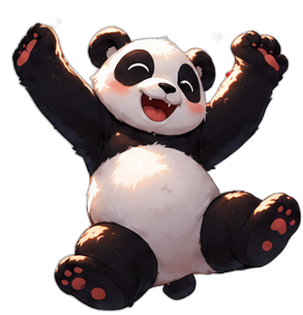
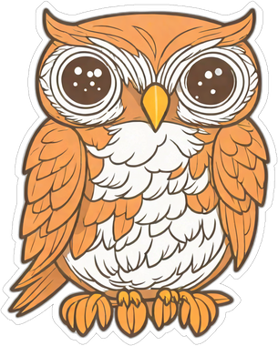

По темам
Приветствия, семья, еда, транспорт — разговорный китайский для реальной жизни, без привязки к уровню экзамена.
Разговорные темы для жизни или пошаговая подготовка к HSK — выбирайте сами. Панда, мопс или сова пройдут этот путь вместе с вами. Полностью офлайн, без интернета.

Большинство приложений выдают слова в случайном порядке. В Uchi с самого начала — два ясных маршрута, и прогресс по каждому виден отдельно.
Приветствия, семья, еда, транспорт — разговорный китайский для реальной жизни, без привязки к уровню экзамена.
Пошагово закрываете целый уровень HSK — от аудирования и чтения до письма и говорения, по мере того как растут требования экзамена.
Отдельный раздел показывает семь основных диалектных групп Китая — где на них говорят, чем они отличаются и какие слова там свои. Аудио и разбор произношения — только там, где мы можем за них поручиться: для остального честно показываем письменную форму и перевод, а не выдуманную транскрипцию.
Один иероглиф — три реальных, задокументированных чтения.
Не просто счётчик серии дней — живой персонаж, которого можно переодеть, и который реагирует на каждый пройденный урок.

СоваОтрабатывайте диалоги в чате — компаньон поправляет ошибки и держит разговор на нужном уровне сложности.
Полноценный справочный словарь на случай, когда учебных карточек не хватает.
Ни один урок не требует связи с интернетом — включая словарь и озвучку.
Дневная норма XP, серия дней подряд и заморозки серии — без давления, но с ощутимым прогрессом.
Бесплатно, без рекламы. Сборки публикуются автоматически из исходного кода.